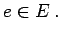
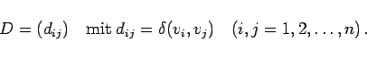
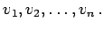
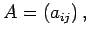
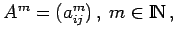
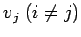
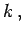
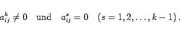

Inhalt Index DeskTop Bronstein

 Algebra und Diskrete Mathematik Algorithmen der Graphentheorie Durchlaufungen von ungerichteten Graphen Kantenfolgen
Algebra und Diskrete Mathematik Algorithmen der Graphentheorie Durchlaufungen von ungerichteten Graphen Kantenfolgen


Es sei G=(V,E,f) ein bewerteter schlichter Graph mit f(e)>0 für alle  Für zwei verschiedene Knoten v,w von G wird ein kürzester Weg von v nach w gesucht, d.h. ein Weg von v nach w, für den die Summe der Bewertungen der Kanten bzw. Bögen minimal ist.
Zur Lösung des Problems wurde von DANTZIG ein effektiver Algorithmus vorgeschlagen, der für gerichtete Graphen formuliert ist und entsprechend auf ungerichtete Graphen angewendet werden kann.
Man kann für jeden bewerteten schlichten Graphen G=(V,E,f) mit  die Entfernungsmatrix oder Distanzmatrix D vom Typ (n,n) aufstellen:
die Entfernungsmatrix oder Distanzmatrix D vom Typ (n,n) aufstellen:
|  | (5.344) |
Sind speziell alle Kanten mit 1 bewertet, d.h. der Abstand von v und w ist gleich der Mindestanzahl der Kanten, die man durchlaufen muß, um im Graphen von v nach w zu gelangen, kann man den Abstand zweier Knoten aus der Adjazenzmatrix ermitteln: Die Knoten von G seien  Die Adjazenzmatrix von G ist  und die Potenzen der Adjazenzmatrix bezüglich der üblichen Multiplikation von Matrizen werden mit  bezeichnet.
Vom Knoten vi zum Knoten  führt genau dann ein kürzester Weg der Länge  wenn gilt:
|  | (5.345) |
| Beispiel A | ||
|
Der in der Abbildung dargestellte bewertete Graph mit der Knotenzahl 6 besitzt die nebenstehend angegebene Entfernungsmatrix.
|
| Beispiel B | |||
|
Der in der Abbildung gezeigte ungerichtete Graph hat die dazu angegebene Entfernungsmatrix (Adjazenzmatrix). Für m=2 bzw. m=3 erhält man die Matrizen A2 und A3, aus denen man die Länge der kürzesten Wege ablesen kann, die zwei Knoten des Graphen verbinden.
Kürzeste Wege der Länge 2 verbinden die Knoten 1 und 3,1 und 4,1 und 5,2 und 6,3 und 4,3 und 5 sowie 4 und 5. Dagegen haben kürzeste Wege zwischen den Knoten 1 und 6,3 und 6 bzw. 4 und 6 die Länge 3. |